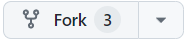

Basic setup#
1. Fork projects repository#
Before you start working on your group projects. You should fork eScience2025-projects repo.
To make a fork, go to the repo page. There you will see a fork button . Click on it to create a copy of this repository in your github user space.
Uncheck Copy the main branch only if you do not want to miss on other branches currently on the original repo.
{kind=link}
2. Get GitHub Access token#
From GitHub documentation.
Go to Github.
Click on your your profile image in the top-right.
Click
SettingsClick
Developer SettingsClick
Personel access tokens->Tokens (classic)Click
Generate new tokenClick
Generate new token (classic)Authenticate
Make a note
Click on
repo,user,admin:org-readClick
generateSave token somewhere, treat it as a password
3. Setup git and clone on jupyterhub#
After you have forked the projects repo you should login to Jupyterhub.
There, you would need to clone your fork and create your first branch you would be working on. See Starting with git on the jupyterhub.
Attention
If you have already accessed test sever, you should move to https://escience2025.craas2.sigma2.no. Test server is only there for testing and will get shutdown.
Type this commands filling in your github username and email (without
<>):git config --global user.name "<your_username>" git config --global user.email "<your_email>"
Clone your fork of projects repository:
git clone https://github.com/<your_username>/eScience2025-projects
Go into your clone:
cd eScience2025-projects
- Add upstream repository (See Setting up remotes):
to check if it’s already added do
git remote -v
git remote add upstream https://github.com/MetOs-UiO/eScience2025-projects git fetch --all
Make your first branch with a sensible name (what are you going to work on). Below you first checkout the current state of the upstream (the main repo, not your fork), and then add a branch (which will then be up to date with the main branch on the main repo) and switch to it, and finally you push your new local branch to the remote origin (which is your fork).
git checkout upstream/main git switch -c <sensible-branch-name> git push origin <sensible-branch-name>
Note
If you do not wish to type your token to authenticate every time you fetch/pull/push:
# activate pangeo-notebook conda environment
source activate pangeo-notebook
# pipe your token into github login command
echo "<your-token-here>" | gh auth login --with-token
# check if you are logged in
gh auth status
If you switch terminal/restart your instance, you might have to activate environment and login again.
Attention
If github still asks for credentials, even if you did gh auth login:
gh auth refresh
# will ask for yes. It will give you a OTP for github.
# got to https://github.com/login/device,
# since we do not have the browser within jupyterlab
# login, enter OTP
gh auth status